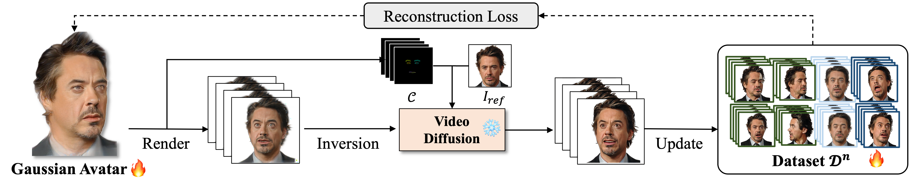

Zero-1-to-A: Zero-Shot One image to Animatable Head Avatars Using Video Diffusion
CVPR 2025
Zhenglin Zhou1,2, Fan Ma2, Hehe Fan2,✉, Tat-Seng Chua3
1 State Key Laboratory of Brain-machine Intelligence, Zhejiang University
2 ReLER, CCAI, Zhejiang University
3 National University of Singapore
Video
Method Overview
Zero-1-to-A simultaneously builds both the dataset and avatar from scratch through video diffusion. It establishes a mutually beneficial relationship between dataset construction and avatar reconstruction, iteratively updating the synthesized dataset and training the head avatar on the updated dataset to achieve unified results.

Pipeline of Progressive Learning sequences learning from simple to complex, facilitating symbiotic generation to create consistent avatars from inconsistent video diffusion. This process divides 4D avatar generation into: (1) Spatial Consistency Learning: progressing from frontal to side views with a fixed expression. (2) Temporal Consistency Learning: learn from relaxed to hyperbole expressions under a fixed camera.
Static Avatar Generation
Comparison with the 3D avatar generation methods.

Dynamic Avatar Generation
Comparison with the 4D avatar generation methods.

Talking Head Video Generation
Comparison with the portrait video diffusion methods.

Citation
@inproceedings{zhou2025zero1toa,
title = {Zero-1-to-A: Zero-Shot One Image to Animatable Head Avatars Using Video Diffusion},
author = {Zhenglin Zhou and Fan Ma and Hehe Fan and Tat-Seng Chua},
booktitle = {Proceedings of the IEEE/CVF Conference on Computer Vision and Pattern Recognition},
year={2025},
}